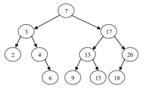
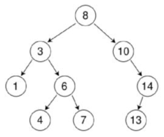
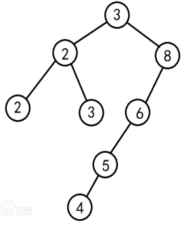
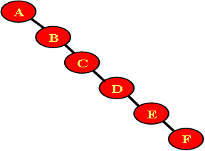
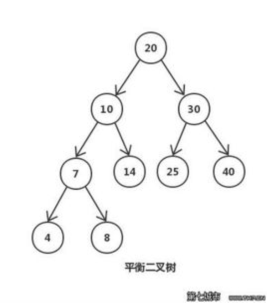
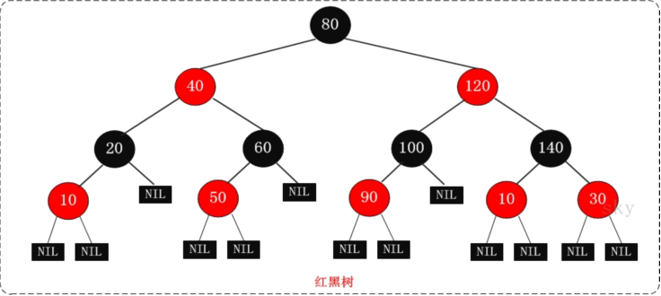
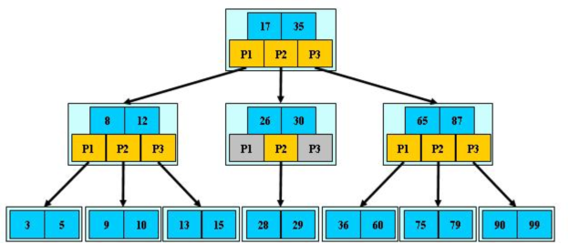
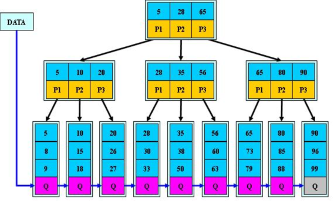
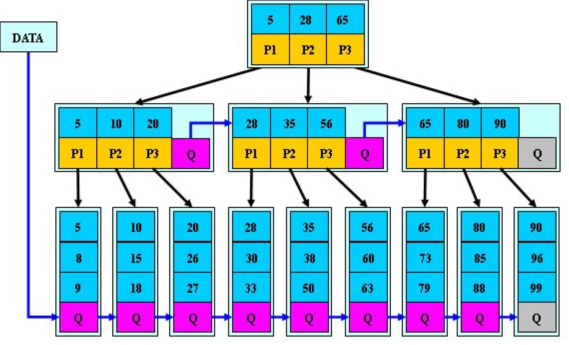

二叉查找/搜索/排序树 BST (binary search/sort tree)
或者是一棵空树；
或者是具有下列性质的二叉树：
（1）若它的左子树不空，则左子树上所有结点的值均小于它的根节点的值；
（2）若它的右子树上所有结点的值均大于它的根节点的值；
（3）它的左、右子树也分别为二叉排序树。
 
 
注意：对二叉查找树进行中序遍历，得到有序集合。
平衡二叉树（Self-balancing binary search tree） 自平衡二叉查找树 又被称为AVL树（有别于AVL算法）
它是一 棵空树
或它的左右两个子树的高度差(平衡因子)的绝对值不超过1，
并且左右两个子树都是一棵平衡二叉树，
同时，平衡二叉树必定是二叉搜索树，反之则不一定
平衡因子（平衡度）：结点的平衡因子是结点的左子树的高度减去右子树的高度。（或反之定义）
平衡二叉树：每个结点的平衡因子都为 1、－1、0 的二叉排序树。或者说每个结点的左右子树的高度最多差1的二叉排序树。
平衡二叉树的目的是为了减少二叉查找树层次，提高查找速度
平衡二叉树的常用实现方法有AVL、红黑树、替罪羊树、Treap、伸展树等

红黑树
R-B Tree，全称是Red-Black Tree，又称为“红黑树”，它一种平衡二叉树。红黑树的每个节点上都有存储位表示节点的颜色，可以是红(Red)或黑(Black)。
红黑树的特性:
（1）每个节点或者是黑色，或者是红色。
（2）根节点是黑色。
（3）每个叶子节点（NIL）是黑色。 [注意：这里叶子节点，是指为空(NIL或NULL)的叶子节点！]
（4）如果一个节点是红色的，则它的子节点必须是黑色的。
（5）从一个节点到该节点的子孙节点的所有路径上包含相同数目的黑节点。
注意：
(01) 特性(3)中的叶子节点，是只为空(NIL或null)的节点。
(02) 特性(5)，确保没有一条路径会比其他路径长出俩倍。因而，红黑树是相对是接近平衡的二叉树

红黑树的应用比较广泛，主要是用它来存储有序的数据，它的时间复杂度是O(logN)，效率非常之高。
它虽然是复杂的，但它的最坏情况运行时间也是非常良好的，并且在实践中是高效的： 它可以在O(log n)时间内做查找，插入和删除，这里的n 是树中元素的数目。
例如，Java集合中的TreeSet和TreeMap，C++ STL中的set、map，以及Linux虚拟内存的管理，都是通过红黑树去实现的。
B树（balanced tree）
你觉得平衡树，和二叉平衡树有什么差别呢？
与二叉平衡树相比，是多叉的
可以降低树的深度，提高查找效率
B树应文件系统的要求而发展起来的，大量数据存放在外存中，通常存放在硬盘中。
由于是海量数据，不可能一次调入内存。因此，要多次访问外存。但硬盘的驱动受机械运动的制约，速度慢。
所以，主要矛盾变为减少访外存次数在 1972 年由 R .Bayer 和 E .Macreight 提出用B_树作为索引组织文件。提高访问速度、减少时间

B+树
在B-树基础上，为叶子结点增加链表指针，所有关键字都在叶子结点中出现，非叶子结点作为叶子结点的索引；
B+树总是到叶子结点才命中；
数据库的索引的默认数据结构就是采用B+树。

B*树
是B+树的变体，在B+树的非根和非叶子结点再增加指向兄弟的指针
